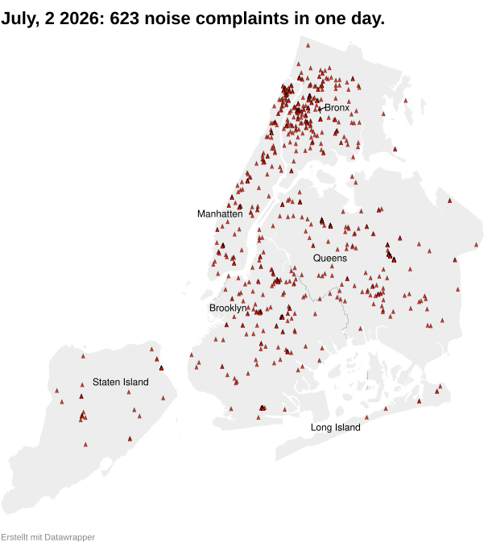
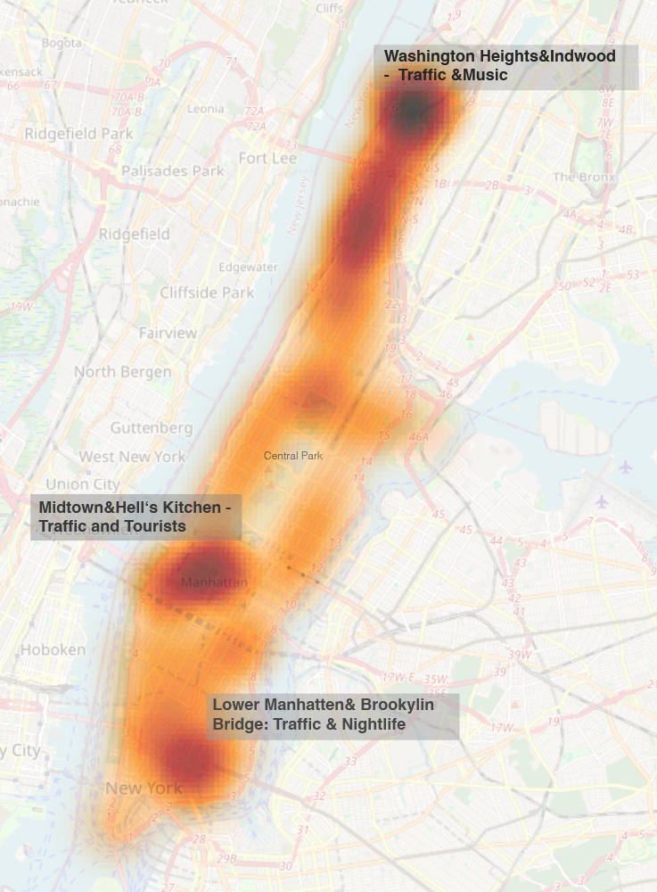

Noisy New York - On the search for the loudest Place
Screaming people, thumping boomboxes, and sirens. New York City is constantly playing at maximum volume. One neighborhood has a particularly high number of noise complaints. Why is that?
The city hits you hard acoustically. New York obeys its own laws of physics. There are many people between the canyon-like streets, many cars. A lot of everything? But is it really that loud? Is the level in this city that never sleeps even higher?
Answer: Yes! The proof is measured in a single number. 120. That is how loud fire truck sirens are in New York. For comparison: in Zurich, the value is around 90 decibels.
Measurements by municipal authorities show a clear picture. While strict limits apply to nighttime noise from emergency vehicles in European metropolises like Zurich, New York City relies on maximum signal impact. This discrepancy leads to massive differences in the stress levels of residents in everyday life.
A closer look at the bare numbers illustrates why complaints in Manhattan are rising so rapidly and why the problem is increasingly reaching health-relevant proportions. It is not that the residents of this city are not sensitive. They complain; they call 311. That is the number to lodge noise complaints with the city. And they do so actively, as a look at the map reveals.

So, in a single day, hundreds of people reach out. Very few complaints are likely to be seriously processed. Because a closer look at the data shows: the most common reason for complaints is music noise. By far.
It is noisy at the city's traffic hubs. But surprisingly, the highest number of noise complaints comes from the very top of Manhattan. In Washington Heights & Inwood.

What municipal noise statistics list as a disturbance is a lived community culture on the ground. Why is there so much dispute over sounds in this neighborhood, away from major traffic and human flows? And what kind of neighborhood is it anyway, up there at the tip between the Hudson River and the Harlem River?
Washington Heights and Inwood in northern Manhattan are deeply shaped by Caribbean influences. As the heart of the Dominican diaspora (DomRep), the neighborhoods merge into a vibrant Latino center.
Public space here pulsates with the rhythm of street food, loud music, and family density. A walk through the neighborhood confirms this.
New York's soundscape easily breaks European noise standards. The 311 data exposes Washington Heights as a noise complaint hotspot. Yet, on-site research shows: where authorities only count decibel violations, Dominican street culture pulsates.
The problem is not the noise, but the habit. Anyone who wants to sleep here is better off moving away – or dancing along.